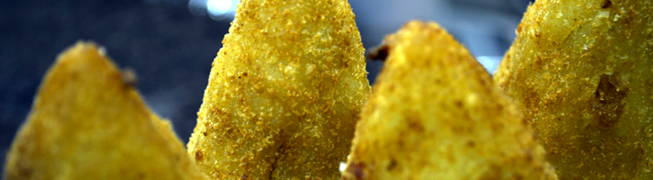
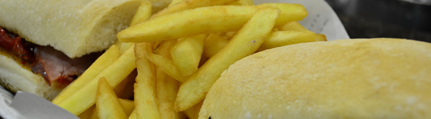
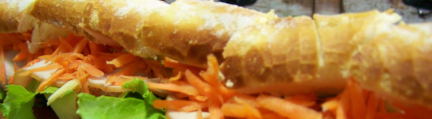
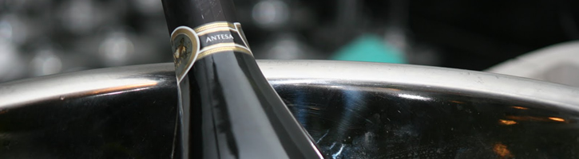

CAFÉ DA MANHÃ & CHÁ DA TARDE
- Bolos
- Salgados sortidos
- Doces sortidos
- Mini pães variados e croissant
- Biscoitos e torradas
- Café
- Leite
- Chá
- Frutas laminadas
- Manteiguinhas
- Mel
- Iogurte
- Sucos naturais (dois sabores)
- Tábua de frios
- Geléia

SALGADOS
- Pão de queijo
- Empada
- Salgados
- Coxinha
- Croissant
- Baguete recheada
- Pizza Mussarela (pedaço)
- Torta salgada
- Pizza Portuguesa e à Moda da Casa (pedaço)
- Pizza de Calabresa (pedaço)
- Pão com manteiga
- Pão com manteiga na chapa
- Pão de cará com manteiga
- Pão de cará na chapa
- Pão com requeijão
- Pão com requeijão na chapa
- Pão com ovo
- Pão de Ciabatta na chapa
- Pão de Ciabatta na chapa c/ requeijão
- Camarão Empanado
- Omelete Simples/ Ovo Mexido
- Omelete Mista

SANDUÍCHES
- Americano no Pão
(bife de contrafilé, queijo, presunto, ovo, alface, tomate e fritas)
- Americano no Prato
(filé, queijo, presunto, alface, ovo, tomate, cebola, palmito e fritas)
- Bauru Bellavilla
(pão de hambúrguer, rosbife, 4 queijos, alface, tomate e batata frita)
- Bauru Tradicional
(pão francês, presunto, queijo, alface, tomate e batata frita)
- Cheese Bacon
(pão de hambúrguer, hambúrguer, bacon, queijo e batata frita)
- Cheese Burguer
(pão de hambúrguer, hambúrguer, queijo e batata frita)
- Cheese Calabresa
(pão de hambúrguer, calabresa, queijo e batata frita)
- Cheese Egg
(pão de hambúrguer, hambúrguer, ovo, queijo e batata frita)
- Cheese Frango
(pão de hambúrguer, peito de frango, queijo, alface, tomate e batata frita)
- Cheese Salada
(pão de hambúrguer, hambúrguer, queijo, alface, tomate e batata frita)
- Cheese Tudo
(pão de hambúrguer, hambúrguer, bacon, presunto, queijo, ovo, calabresa, alface, tomate e batata frita)
- Hambúrguer
(pão de hambúrguer, hambúrguer e batata frita)
- Churrasco BellaVilla no prato
(filé mignon, ovo, alface, tomate, cebola, palmito e batata frita)
- Churrasco no Prato
(bife de contrafilé, ovo, alface, tomate, cebola, palmito e batata frita)
- Churrasco Especial
(pão francês, filé mignon, queijo prato, vinagrete e batata frita)
- Churrasco Simples
(pão francês, contra filé, queijo prato e batata frita)
- Light
(pão integral, peito de peru, queijo branco, alface e tomate)
- Misto Quente
(pão de forma, queijo, presunto e batata frita)
- Queijo Quente
(pão de forma, queijo e batata frita)
- Sanduíche Frango com Catupiry
(pão de hambúrguer, peito de frango, catupiry, alface, tomate e batata frita)
- Sanduíche de Mortadela Ceratti
(pão francês e mortadela Ceratti)
- Sanduíche Natural
(pão francês, peito de peru, alface e tomate)
- Sanduíche de Peru
(peito de peru e queijo branco)
- Sanduíche de Salame
(pão francês e salame)
- Siena
(pão de ciabatta, mussarela de búfala, tomate seco, azeitonas, alface, maionese e fritas)
- Firenze
(pão de ciabatta, presunto parma, mussarela de búfala, alface, tomate e fritas)
- Veneza
(pão de ciabatta, lombo canadense, patê de azeitonas, tomate seco e fritas)
- Milão
(pão de ciabatta, peito de peru, queijo branco, patê de ervas, alface, tomate e fritas)
- Verona
(pão de ciabatta, rosbife da casa, maionese, tomate e fritas)

Baguete de metro
- Presunto Parma, Queijo Estepe, Patê de Provolone, Alface e Tomate
(Queijo Estepe, Patê de Provolone, Alface e Tomate)
- Salame Italiano
(Provolone, Molho de Azeitona, Rúcula e Tomate)
- Peito de Peru
(Queijo Estepe, Frango Desfiado, Maionese, Alface e Tomate)
- Rosbife da Casa
(Queijo Gruyère, Molho Rosê, Alface e Tomate)
- Copa
(Queijo Gouda, Requeijão, Cenoura Ralada, Alface e Tomate)
- Lombo Canadense
(Queijo Gouda, Patê de Provolone, Alface e Tomate)
- Blanquet de Peru
(Queijo Gruyère, Salame Italiano, Maionese, Alface e Tomate)
- Queijo Branco
(Tomate Seco, Rúcula, Requeijão e Tomate)
- Presunto Royale
(Mussarela, Rúcula e Patê de Tomate Seco)
- Pêssego
(Presunto, Abacaxi, Mel, Cereja e Queijo Branco)
- Presunto
(Queijo Prato, Patê de Provolone, Alface e Tomate)
- Rosbife da Casa
(Mussarela, Tomate Seco, Rúcula e Maionese)
- Frango Desfiado
(Queijo Prato, Batata Palha, Requeijão Catupiry, Alface e Tomate)
- Salame Hamburguês
(Provolone, Rúcula e Tomate Seco)
- Peito de Peru
(Mussarela de Búfala, Cenoura Ralada, Requeijão Catupiry, Alface e Tomate)
- Maionese
(Rosbife Ceratti, Queijo Prato, Alface e Tomate)
- Maionese
(Mortadela Ceratti, Queijo Fresco, Alface e Tomate)

bebidas
- Café expresso pequeno
- Café expresso grande
- Café expresso com leite pequeno
- Café expresso com leite grande
- Café de coador
- Café de coador com leite
- Café expresso pequeno com chantilly
- Café expresso grande com chantilly
-
Suco de laranja
(copo)
-
Iogurte batido
(copo)
- Chocolate quente pequeno
- Chocolate quente grande
- Chocolate gelado grande
- Cappuccino pequeno
- Cappuccino grande
- Cappuccino pequeno com chantilly
- Cappuccino grande com chantilly
- Refrigerante lata
- Refrigerante 600ml
-
Suco natural jarra
(abacaxi, caju, melancia, morango, laranja, goiaba, limão, maracujá e manga)
-
Suco Especial
(melão ou com duas frutas)
- Vitamina
- Batidas
- Cerveja lata
- Cerveja long neck nacional
- Cerveja long neck importada
- Cerveja Teresópolis
- Cerveja Norteña/ Patrícia/ Pilsen
- Cerveja Stella Artois ou Devassa
- Água mineral copo
- Água mineral garrafa
- H2OH 500ml
- H2OH 1,5L ou coca cola 1,5L
- Refrigerante 2L
- Ice tea lata
- Schweppes citrus
- Suco del valle lata
- Milk shake
- Soda italiana copo
- Chá Matte jarra
-
Taça de Vinho
(Casa Valduga, Cabernet Sauvignon )
- Caipirinha de Vodka
- Caipirinha de Pinga
Todos os direitos reservados © 2025 - 2026
Parcerias de sucesso:
Delivery: 13 3222 4466 ou 3221 3737, consulte nossa área de cobertura.